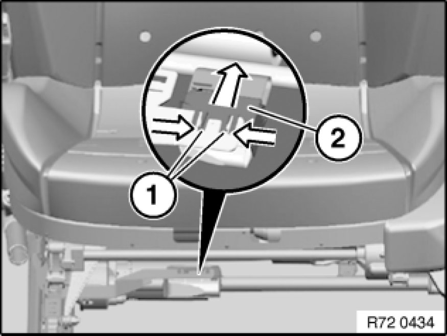
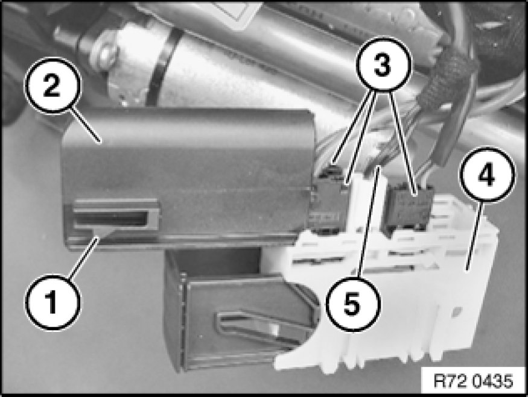
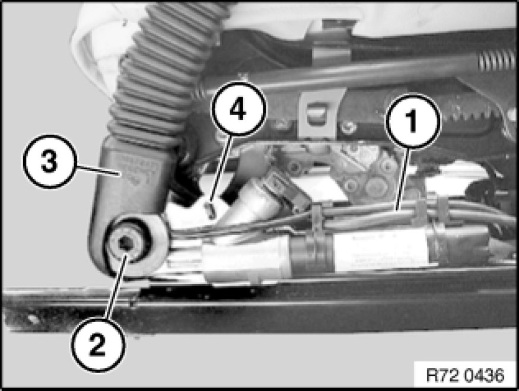
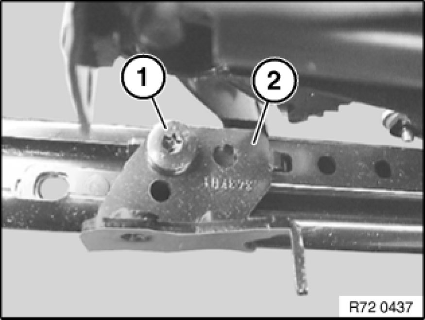

Seat Belt Tensioner: Service and Repair
72 11 041 - Removing and installing/replacing front left or right lower belt fitting (seat belt tensioner)

Necessary preliminary tasks:
- Remove front seat Front Seat, Normal, Manual

Release catches (1) and remove housing (2).

Release catch (1) at front/rear.
Open cover (2).
Disconnect plug connection (3).
Replacement only:
If necessary, unpin wiring harness (5) from housing (4).

Feed out wiring harness (1).
Release screw (2).
Tightening torque 72 11 03AZ.
Remove belt tensioner (3).
Installation:
Belt tensioner (3) is secured at opening (4).

If necessary, release screw (1).
Tightening torque 72 11 04AZ.
Take off holder (2).